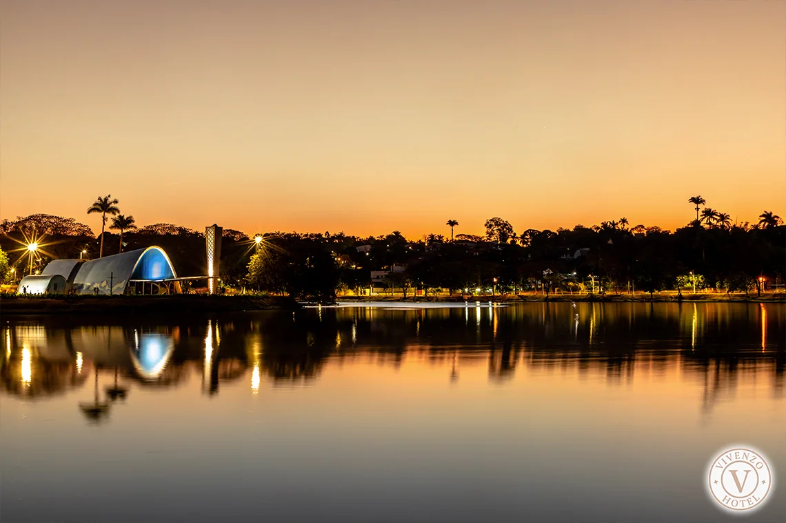
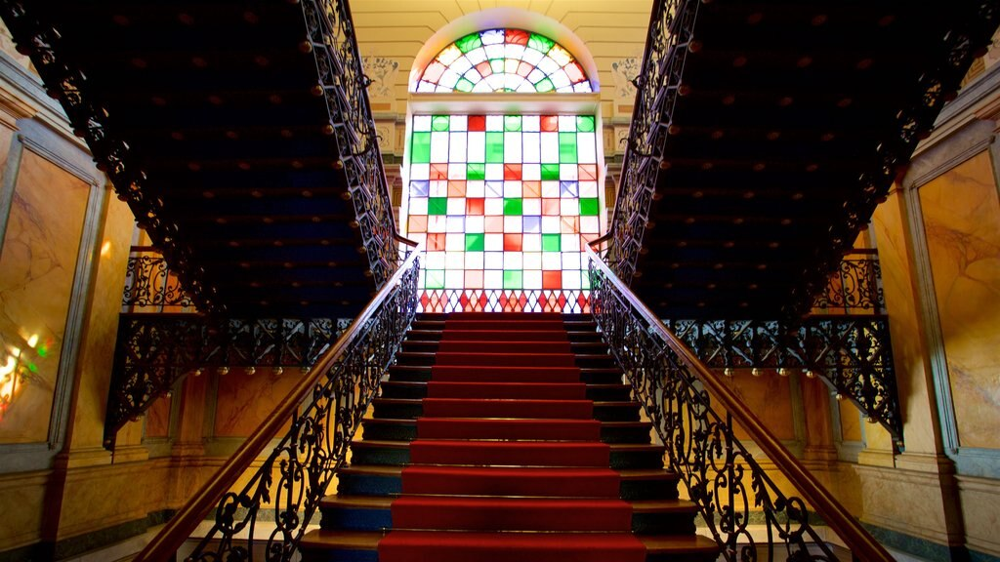
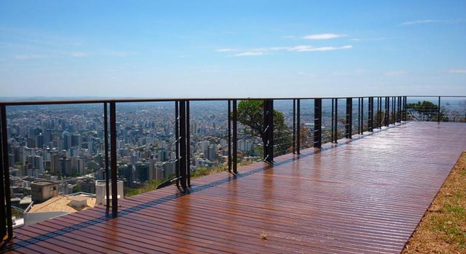

Bem-vindo a EuroTour
Circuito Lagoa da Pampulha
Circuito Pampulha: Descubra a arquitetura marcante de Oscar Niemeyer ao passear pela volta da Lagoa da Pampulha. Aprecie a beleza da Igreja de São Francisco de Assis, a Casa do Baile e o Museu de Arte da Pampulha, enquanto absorve a atmosfera cultural e histórica desta região única.
Museu das Minas e do Metal
Museu das Minas e do Metal: Explore a fascinante história da mineração e metalurgia em Minas Gerais neste museu interativo. Desde a extração do ouro até os avanços modernos na indústria metalúrgica, esta instituição oferece uma experiência educativa e cativante para todos os visitantes.
Mirante do Mangebeiras
Mirante Mangabeiras: Suba até o topo e contemple a deslumbrante vista panorâmica da cidade de Belo Horizonte. Do Mirante Mangabeiras, você pode apreciar a grandiosidade da paisagem urbana, cercada pela natureza exuberante das montanhas e vales que abraçam a cidade.
